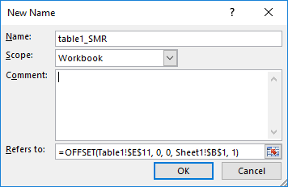

1 Charts Auto-Update
Task: to have the Excel charts automatically update with the addition of new rows in a table.
Steps
Replace every formula in the chart with a named formula that includes an offset function to auto-detect the data range dynamically.
For every data series that you want to automatically update:
- Start by creating a named formula.
- Then, create an offset function inside the named formula:
- Reference the column of the data series that you wish to update.
- Reference the number of rows of the table which is being updated.
- Save the named formula.
- Have the data series you want to change reference this new named formula.
Details
In this worked example we are using HSMR_TableA1a_Automated, with sheet “Chart2”. Each quarter a new row will be added, we need to make our chart automically update to include this new data. We can do this with an OFFSET function but need to set this up as a named function to then include in our Chart Series values.
- First, set up a dynamic count for the number of rows in the table. In this example, we’ve set up a sheet for calculations,
Sheet 1and entered the formulaCOUNTA(Table1!C:C)-1in one of the cells - this will count the number of non-blank cells in this range.
- Go to the “Formulas” tab and then click on the “Name Manager” button:

- Create a new name by clicking on “New…”
- Name and add reference forumla. In this example, we’ve named it “ChartData” and the formula is
=OFFSET(Table1!$E$11, 0, 0, H5, 1).

- Finally, select the chart and right-click, click on “Select Data…”, and then click on “Edit” for the series values. Add the named function as the series value.
These steps should then be repeated for the X-Axis values, and once for each line within your chart. After completing this, the charts should be automically updated with each new quarter’s data that is added.